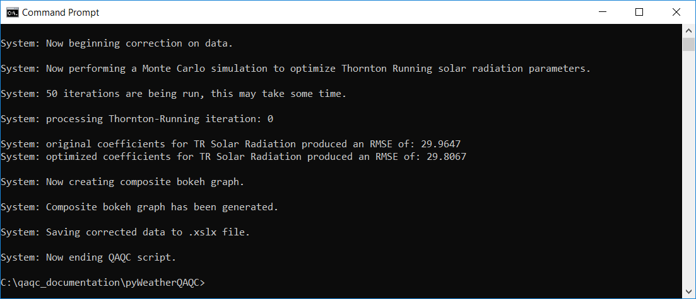
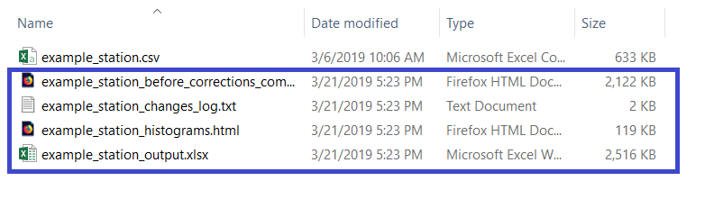
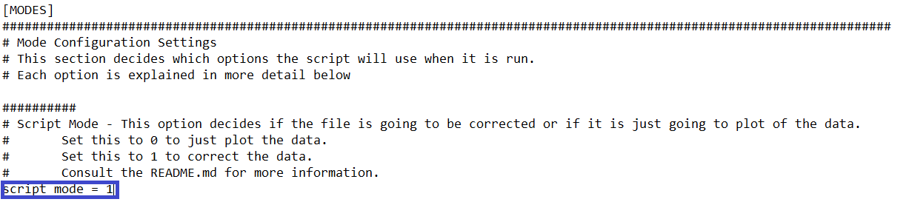

Example Run¶
Running pyWeatherQAQC happens in two iterations, first is to generate a graph of all the data for your inspection, and the second is to correct any data that appears faulty, wrong, or suspicious.
Note
The directions here assume that your config.ini file and directory structure have been unchanged from when you cloned the Github repository.
Step 1: Visualizing the Data¶
Everything is already setup for you, so point the command prompt/terminal window to the directory containing QAQC_Master.py and type:
>python QAQC_Master.py
This will start the script to and it will automatically start reading parameters from the file ‘config.ini’.
If you have multiple configuration files, you can ask the script to read from a specific one by typing:
>python QAQC_Master.py <CONFIGUATION_FILE_PATH_HERE>
Regardless of which method you chose, there is nothing more to do for this iteration. The script will generate some text and then end.
{kind=link}
Caution
If you are using Python 3.7, you may receive a DepreciationWarning. It can be safely ignored.
If you open the directory of the data file, you’ll see that several new files have been generated (here indicated by the blue box).
{kind=link}
Of these new files, we are only interested in example_station_before_corrections_composite_graph.html. It contains graphs of all of provided different variables in an easy to view format.
Note
You can click these images to view a larger version.

All the variables are provided side-by-side for comparision, however at this scale it’s difficult to see the details. You can use the tools in bokeh (green box) to get a closer view:

The different variable plots are linked together, so zooming in on one will cause the others to behave the same way. In addition, if you hover the cursor over individual data points a pop-up will tell you the value and index of it.
Looking at these variables for this time period, we have a couple issues:
- For the year of 1996/1997 relative humidity never quite reaches 100%, indicating some possible sensor drift.
- For that same period, actual solar radiation is higher than the theoretical clear-sky solar radiation, indicating the sensor may not have been calibrated correctly.
If we pan through the entire record, we see these two issues occur fairly consistently, with relative humidity appearing particularly bad in the years 2007-2009. Next, we’ll rerun the script to correct these issues.
Step 2: Correcting the Data¶
In order to indicate to pyWeatherQAQC that we’re correcting the data, we need to change the appropriate parameter in the config.ini file (blue box):
{kind=link}
We’re now going to correct this data. If you’re curious as to exactly how we correct the different variables and why, please see the see Correction Process writeup.
First, run the script again with:
>python QAQC_Master.py
Once that’s done, some text will generate and then the script will prompt you with a choice:

Correcting data works as a loop:
- You pick a variable and correct it.
- All secondary variables that may depend on that corrected variable are recalculated.
- You pick the next variable for correction.
- Once you have iterated through all variables you wanted to correct, the script does one final recalculation, saves its outputs, and ends.
We don’t want to correct a variable, then have it later be affected by correcting another variable. An example of this would be correcting solar radiation first, which is corrected using clear-sky solar radiation values, and then later correct humidity data, which is used in the calculation of clear-sky solar radiation. To avoid this, it is important to correct in the following order:
- Correct maximum and minimum temperature data
- Correct wind speed and precipitation data
- Correct the best humidity variable that has been provided
- Correct solar radiation
- Exit the script and save the outputs
Enter ‘1’ for temperature data and you should be presented with another figure:

When you correct a variable, the script generates a bokeh plot for that variable that contains four subplots:
- The original data before correction
- The latest corrected data
- The deltas of Corrected - Original Values
- The percent change of ( Corrected - Original ) / Original
Note
A data point that is missing, either from missing within the record or because you have removed it yourself, shows up as a blank spot in the bokeh plots.
Right now they aren’t that helpful because we haven’t changed the data. We also see that the terminal window has given us more choices:

The Dark Blue section is the first prompt, where you indicate what section of the data series you want to modify. In this example I have entered -1 to select the entire data series. If I wanted to correct only a specific section, I would enter the index of the start of that section and then the script would prompt me to enter the ending index of that section.
Note
You can hover your cursor over a data point in the bokeh charts to get its index. Use this to accurately mark sections of data.
The Light Blue section is the second prompt, where you indicate what method of correction you want to use on the data. In this example, we decide to enter 4 to use the modified z-scores approach to remove outliers. The script performs this method and outputs a few metrics for us to look at.
Note
Depending on what variable you correct, you may be presented with different options and multiple prompts to correct the data. In each case the prompt also has a recommended value to enter.
It’s hard to go wrong following these recommended values.
The Dark Green section is the final prompt, where we are asked what we want to do next. We have the option to finish correction, do another iteration, start over, or exit without saving. After each iteration of corrections the bokeh chart is updated to reflect changes.
Note
It’s bad practice to correct a data point more than once. The most likely course of action you’ll take is to select sections of really bad data, throw those observations out, and then do a final correction for the entire record where you actually correct values.
Once you select option 1 or option 4, the script prompts you with the previous menu to select a variable for correction.
Now that we’ve explained the process in depth, the remaining process for this station is:
- Enter 1 to return to the previous menu.
- Enter 6 to correct your provided humidity variable, which in this case was RHMax and RHMin
- Select the full data series with -1, then select 4 for a year-based percentile correction, using the 99-th percentile.
- Enter 1 to return to the previous menu and select 5 to select solar radiation.
- Select the full data series with -1, then select 4 for a period-based percentile correction, using 99, 60, and 90 as parameters.
- Now, just as an exercise in using the script, enter 2 to do another iteration, starting the interval at index 6550 and ending it at 6940. Finally, select 3 to remove that data.
- Enter 1 to return to the previous menu and enter 7 to do the final calculations and then close.
Note
On this particular station there are no issues with either precipitation or wind speed data. If there were issues present, we would ideally correct them between steps 1 and 2 above.
Caution
The final calculations include some computationally-intensive activities. Depending on your hardware and size of data set it may take a few moments to finish.
Step 3: Output Files¶
Once the script has ended, reopen the directory containing the station data and you’ll see several new files:

The Dark Blue file is a composite output graph that mirrors the composition of the ‘before_corrections_composite_graph.’
The Light Blue file is the log file that documents what order the variables were changed in and how, for accountability.
- The Dark Green file is the actual output file of all the data. It contains three sheets:
- The first sheet contains the actual corrected data.
- The second sheet contains the deltas of final values and original values.
- The third sheet tracks any missing values that were filled in by the script.
The Light Green files are the individual variable graphs that we saw when correcting, such as in the temperature example above.
Note
Notice how in the individual variable graph for solar radiation the year 2010 is missing observations (because we chose to remove them), yet on the composite graph there are no missing observations. This discrepancy is due to the script filling in missing solar data with the Thornton-Running model during the final calculations.
With that, you’re done. Congratulations on correcting your first station of data.